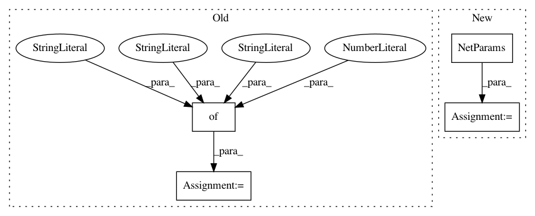

0ab10d4eaa27bc7c2b342c69b253e99adb5b3c55,cistar_dev/examples/two_loops_one_merging_test.py,,,#,19
Before Change
net_params = {"ring_radius": 230/(2*np.pi), "lanes": 1, "speed_limit": 30, "resolution": 40,
"net_path": "debug/net/", "no-internal-links": False}
cfg_params = {"start_time": 0, "end_time": 3000, "cfg_path": "debug/cfg/"}
initial_config = InitialConfig(spacing="custom")
scenario = TwoLoopsOneMergingScenario("two-loop-one-merging", TwoLoopOneMergingGenerator, vehicles,
After Change
env_params = EnvParams(additional_params=additional_env_params)
additional_net_params = {"ring_radius": 230/(2*np.pi), "lanes": 1, "speed_limit": 30, "resolution": 40}
net_params = NetParams(no_internal_links=False, additional_params=additional_net_params)
initial_config = InitialConfig(spacing="custom")
scenario = TwoLoopsOneMergingScenario("two-loop-one-merging", TwoLoopOneMergingGenerator, vehicles,
In pattern: SUPERPATTERN
Frequency: 3
Non-data size: 4
Instances
Project Name: flow-project/flow
Commit Name: 0ab10d4eaa27bc7c2b342c69b253e99adb5b3c55
Time: 2017-08-31
Author: akreidieh@gmail.com
File Name: cistar_dev/examples/two_loops_one_merging_test.py
Class Name:
Method Name:
Project Name: flow-project/flow
Commit Name: 28b657fc3e287873473a43da01b4db4b64d1ad03
Time: 2017-10-12
Author: kanaadp@users.noreply.github.com
File Name: examples/two_loops_two_mergin_test.py
Class Name:
Method Name:
Project Name: flow-project/flow
Commit Name: 0ab10d4eaa27bc7c2b342c69b253e99adb5b3c55
Time: 2017-08-31
Author: akreidieh@gmail.com
File Name: cistar_dev/examples/sugiyama.py
Class Name:
Method Name: